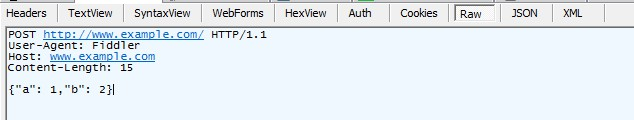
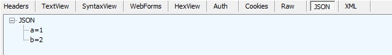

抓包工具
Fiddler
Fiddler 是一个 http 协议调试代理工具。[1]
Fiddler 的工作原理是在客户端和服务器之间设置一个 127.0.0.1:8888 的代理，从客户端发出的请求会先经过这个代理再发送给服务器，服务器响应的数据也会经过这个代理再发送到客户端。
代理设置
打开 Fiddler 后它将 自动 对浏览器代理进行设置，关闭 Fiddler 后则自动修改回原来的设置。
界面
打开 Fiddler 后，打开(菜单栏 -> File ->) Capture Traffic 功能(默认打开)， Fiddler 就开始捕获从客户端发起的 HTTP 请求。
可执行操作：
- Statistics
- Insperctors
- AutoRespender
- Composer
- ...
Statistics
Statistics 对请求与响应数据进行统计分析，点击左侧某一个请求，右边将显示请求报文长度、响应报文长度、客户端连接时间等信息。
Insperctors
Insperctors 对数据进行格式化浏览，即对报文的内容进行更美观易懂的显示。
-
Request
- Header：显示请求头部信息
- TextView：显示请求报文主体
- SytaxView：带有语法高亮的报文主体
- WebForms：提取出请求的表单数据
- HexView：转化为 16 进制数据
- Auth：授权信息
- Cookies：查看发起请求时携带的 cookies
- Raw：查看原生 HTTP 报文
- JSON：将报文主体的 JSON 数据美观化
- XML：将报文主体以 XML 格式显示
  发送 {"a": 1,"b": 2}，查看时的显示 - Response
- Transformer
- ImageView：查看返回内容里的图片
- Caching：缓存
- WebView：对返回内容进行浏览器渲染
- 其他功能上与请求时一样，显示的是响应报文的数据
AutoRespender
AutoRespender 允许 Fiddler 对客户端发起的请求进行拦截，之后再跳转到设置好的 URL 上。
- 点击 Add Rule 添加匹配与跳转规则
- 在下方 Rule Editor 对规则进行编辑，之后点击 Save 进行保存
- 勾选 Enable rules 开启拦截
- 字符串匹配：即使请求是否包含该字符串
- 正则匹配：使用 regex:正则表达式 进行匹配
Composer
Composer 可以自定义并发起一个 HTTP 请求。
- Parsed：使用图形化界面的选项发起 HTTP 请求
- Raw：直接写原生 HTTP 请求
问题
Fiddler 怎么不抓浏览器的包了？
可能是使用了浏览器代理，一些代理插件会直接将数据发送出去而不会发送给 127.0.0.1:8888，使用时需要关闭插件的代理。
怎么抓 curl 的包
Fiddler 代理端口是 127.0.0.1:8888 ，curl 默认不走代理的端口，因此需要为 curl 手动设立代理。
<?php
$ch = curl_init('http://isempty.site');
curl_setopt($ch, CURLOPT_PROXY, '127.0.0.1:8888'); // 设置代理服务器
$data = curl_exec($ch);
curl_close($ch);
?>
参考文献